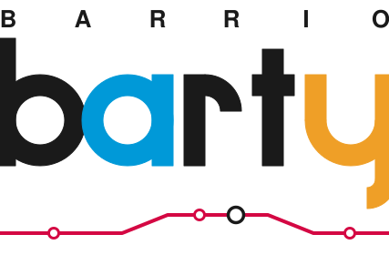
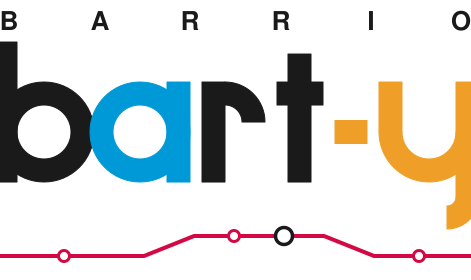
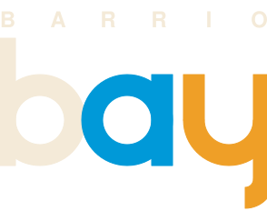
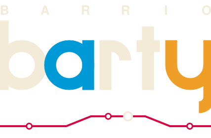

Built on the real BART mark's structure: spaced caps row on top, giant geometric lowercase below (black b, BART-blue #0099D8 a, amber y with a true descender), stems cropped at the frame edges. Big letters are pure geometry — no fonts. Each concept has a dark-surface variant (black → parchment; blue, amber, and line colors unchanged).
Animated load screen (C morphing into B and back): loadscreen.html
B A R R I O spaced across the top where B A R T sits in the real mark; giant bart below with the amber y — open u-bowl, right stem dropping below the baseline into a leftward tail. No hyphen: the color break does the separating.
Giant ba with the amber y bolted straight on — reads “bay,” a free second pun. The app-icon / favicon candidate.
Concept A plus one thin route line beneath: three station dots and one interchange ring, nothing else.

The amber already separates bart from y, and the real BART mark carries no punctuation.
Spells the name literally as “BART-y” at the cost of a punctuation block the source mark would never carry.



